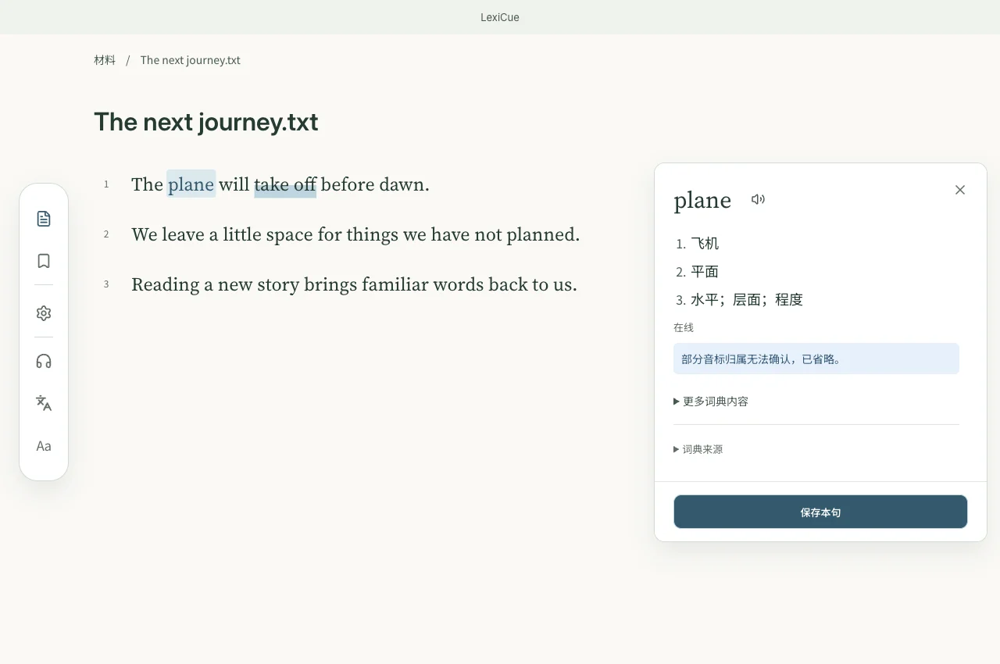
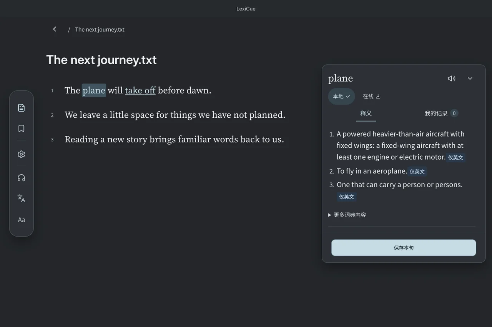

阅读与查词
理解英文，同时留在原来的阅读位置。
本页目录
单词与一段表达
- 点选单词查词，或选择一段表达按语境理解。可切换可用词典来源，按需填写自己的解释。
- 桌面在原文旁打开查词面板，小屏使用底部弹层；关闭后继续阅读。



相关操作词典义项
中文译文与听读
用译文控件显示或隐藏中文。保留已有译文，缺失部分可联网补译；获取失败时仍可继续读英文，稍后重试。
进入听读模式跟随阅读；有来源音频时播放来源，也可使用朗读并调节倍速。朗读与来源播放受网络、媒体可用性和平台支持限制。
保存理解
保存表达、来源原句与可用词典参考，并为当前句子填写自己的解释或注释。当前工作区围绕语境收藏与重遇展开，旧学习记录在历史记录中保留。